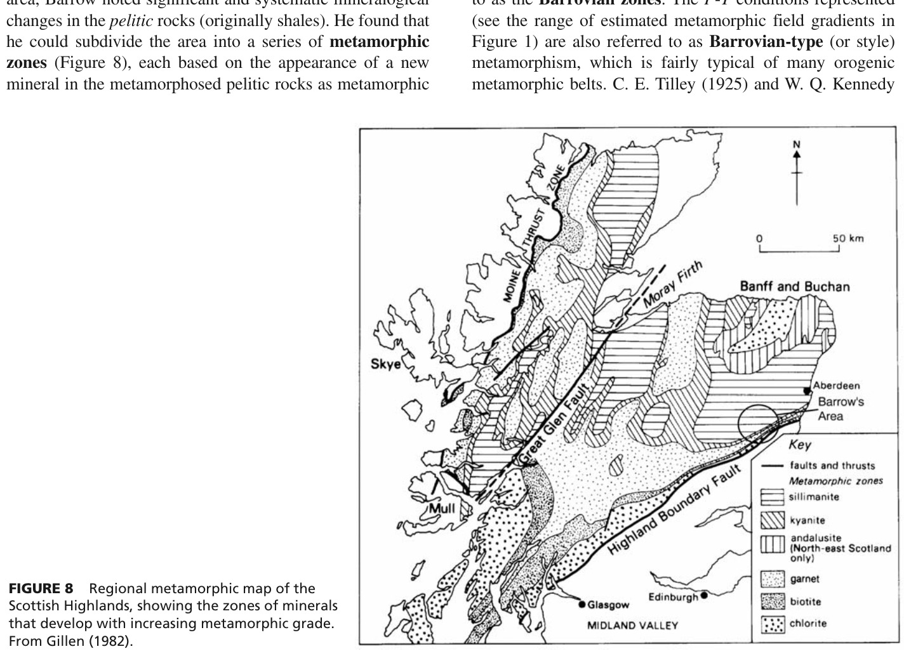
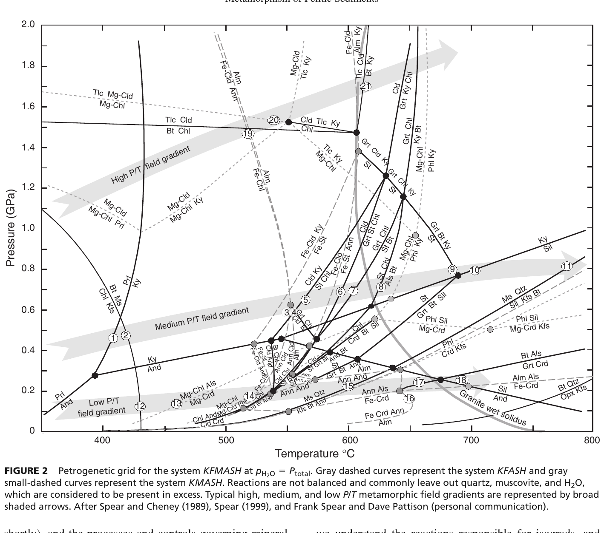
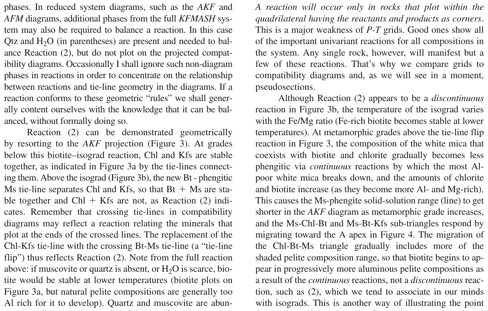

The systematic zoning of regional metamorphic terranes originated with the pioneering field work of George Barrow (1893, 1912) in the Dalradian Supergroup of the Grampian Highlands, Scotland. Barrow mapped a sequence of systematic mineralogical transformations occurring within metamorphosed pelitic rocks (shales, mudstones, and siltstones) progressing outward from unmetamorphosed or low-grade sediments toward deeper, hotter orogenic infrastructure.
The classical sequence of index minerals recognized by Barrow defines what is now universally termed the Barrovian metamorphic series (representing typical medium P/T regional orogenic metamorphism):

In 1925, Cecil Edgar Tilley introduced the term isograd (from the Greek iso = equal, gradus = grade or step) to describe the mappable boundary that separates two metamorphic zones. In classical mapping:

In low-grade pelitic rocks (slates and phyllites of the chlorite zone), the primary sheet silicates are chlorite and phengitic muscovite (a white mica rich in the celadonite component, where Al in octahedral and tetrahedral sites is substituted by (Mg, Fe) + Si: AlVI + AlIV ↔ (Mg, Fe)VI + SiIV).
As temperature increases into the range of approximately 300°C to 400°C at crustal pressures of 2 to 6 kbar, the first brown biotite flakes nucleate in the rock. The specific reaction responsible for the appearance of biotite depends on the bulk potassium content and whether K-feldspar or phengite acts as the potassium reservoir:
3 Chlorite + 8 K-feldspar = 5 Biotite + 3 Muscovite + 9 Quartz + 4 H₂O
This reaction consumes K-feldspar completely in most normal aluminous pelites, explaining why K-feldspar is typically absent from intermediate-grade Barrovian pelites until the high-grade second-sillimanite isograd is reached.
Chlorite + Phengitic Muscovite = Biotite + Muscovite (less phengitic) + Quartz + H₂O
Because this is a continuous multi-component reaction involving Fe-Mg-Al solid solutions, chlorite does not disappear abruptly at the isograd; instead, chlorite and biotite coexist across the entire width of the biotite zone!

Therefore, in the biotite zone of a Barrovian sequence, the classic equilibrium mineral assemblage is:
| Barrovian Zone | Defining Isograd Reaction (in Pelites) | Diagnostic Equilibrium Assemblage | Approx. T (°C) | Metamorphic Facies |
|---|---|---|---|---|
| Chlorite Zone | Smectite/Illite → Chl + Ms | Chlorite + Muscovite + Albite + Quartz ± Epidote | < 300°C | Sub-greenschist to Lower Greenschist |
| Biotite Zone | Chl + Phengite / Kfs → Bt + Ms + Qtz + H₂O | Biotite + Chlorite + Muscovite + Quartz + Albite | 300 – 420°C | Middle Greenschist Facies |
| Garnet Zone | Chl + Ms + Qtz → Grt (Alm) + Bt + H₂O | Almandine + Biotite + Muscovite + Quartz + Oligoclase | 420 – 520°C | Upper Greenschist to Epidote-Amphibolite |
| Staurolite Zone | Grt + Chl + Ms → St + Bt + Qtz + H₂O | Staurolite + Biotite + Almandine + Muscovite + Quartz + Plagioclase | 520 – 580°C | Lower Amphibolite Facies |
| Kyanite Zone | St + Chl + Ms → Ky + Bt + Qtz + H₂O | Kyanite + Staurolite + Biotite + Almandine + Muscovite + Quartz + Plagioclase | 580 – 650°C | Middle Amphibolite Facies |
| Sillimanite Zone | Ky → Sil (polymorphic) & Ms + Qtz → Sil + Kfs + Melt | Sillimanite (fibrolite/prismatic) + Biotite + Garnet + Plagioclase + Quartz ± K-feldspar | > 650°C | Upper Amphibolite to Granulite Facies |